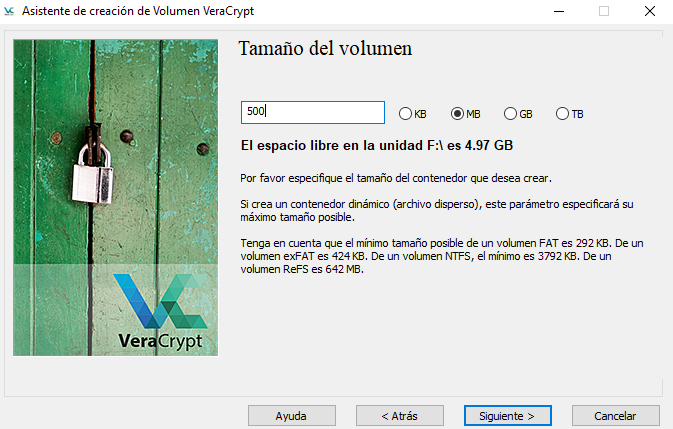

Laboratorio 1. Cifrado volumen VeraCrypt
1. Introducción
En esta tarea, tienes que utilizar el programa VeraCrypt en un equipo con Windows 10 o Windows Server 2019.
2. Recursos
- Equipo windows 10 o Windows Server tu subsistema del proyecto.
- Crear un disco nuevo de 5Gbytes en el equipo formateado en NTFS.
3. Trabajo a realizar
En primer lugar tienes que descargar la aplicación desde su web oficial.
Una vez descargado el instalable para Windows, hay que comenzar con el proceso de instalación.
Una vez finalizado el proceso de instalación, ejecutamos el fichero "C:\Program Files\VeraCrypt\VeraCrypt.exe".
A continuación, hay que crear un volumen encriptado, seleccionando la opción de Crear Volumen (ver figura superior). Se abre un asistente para crear el volumen, donde hay que seleccionar las diferentes opciones que se deseen de cifrado de. disco, fichero virtual, etc..
En el siguiente cuadro de pestañas, se describen los pasos en secuencia.
1.
1. Para este caso de ejemplo, en esta primera ventana del asistente, seleccionamos la primera opción, 'Crear un contenedor de archivos cifrado'. ya que se pretende crear un disco de cifrado virtual dentro de un archivo. El tamaño del archivo, se le proporcionará al asistente más adelante.
2.
A continuación, seleccionamos el tipo de volumen 'Volumen VeraCrypt común', dado que se desea crear un volumen normal.
3.
A continuación, seleccionamos la ubicación del archivo encriptado. Para este caso de ejemplo, el archivo se alojará en el disco F:\ y se llamará encriptado-volumnen.

4.
A continuación, hay que seleccionar el algoritmo de cifrado y hash que se utilizará. Para este ejemplo, se selecciona AES y hash SHA-512.
5.
A continuación, hay que seleccionar el tamaño del volumen, para este caso, lo fijaremos a 500 MBytes.

6.
A continuación, hay que ingresar la contraseña del volumen necesaria para desencriptar y poder utilizar el volumen.
Si la contraseña es corta (como es el caso) aparece una ventana informativa (warning) avisando del uso de contraseñas cortas y recomendando el uso de contraseñas de como mínimo 20 caracteres. Podemos avanzar pulsando el botón 'Sí'.
7.
A continuación, en la siguiente ventana hay que mover el ratón para generar la clave criptográfica aleatoria a partir de la posición del ratón.
Una vez la línea está verde, pulsamos el botón 'Formatear'. Cuando finalice el proceso, nos avisa con una ventana emergente (ver imagen inferior). Para continuar, pulsamos 'Aceptar'.
8.
La siguiente ventana del asistente nos informa que el volumen ha sido creado y está listo para usarse.
9.
Para utilizar el volumen, hay que acceder a Volúmenes > Seleccionar Archivo, y seleccionar el archivo creado anteriormente.
10.
A continuación, hay que especificar una letra sobre la que se montará el volumen y pulsamos Montar.
11.
El asistente solicita la contraseña par poder realizar el montaje.
12.
Si todo va bien, montará el volumen.
13.
Si accedemos a Equipo podremos ver el volumen montado, en el cual todo lo que guardemos al desmontarlo, quedará cifrado.
Obra publicada con Licencia Creative Commons Reconocimiento No comercial Compartir igual 4.0